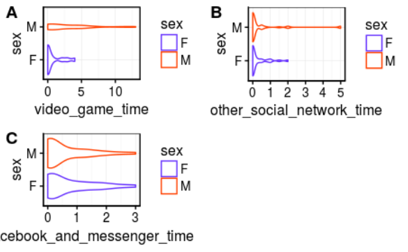
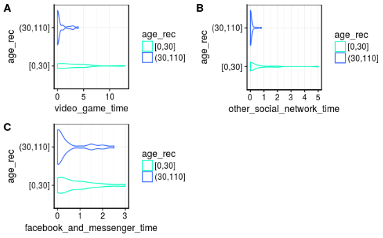
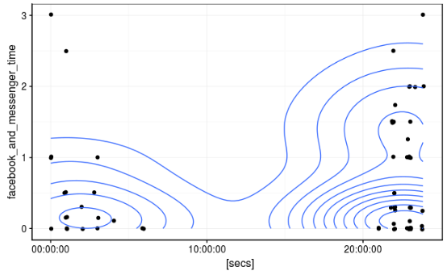
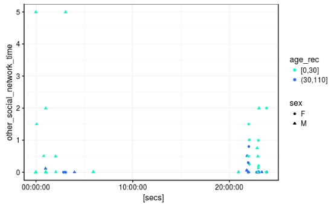
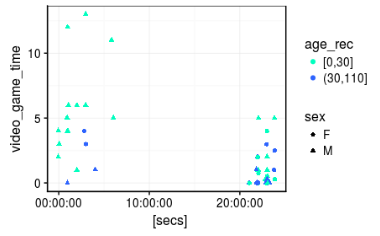

Here I describe my project using Markdown formatting...
#Project #Here the gitHub repository :
https://github.com/clement-tourbez/Socials-networks-consequences-on-sleep-quality
Here all the contributors to this rapport:
#Introduction
Recently, there have been a lot of discussions about the effects of social networks and video games on sleeping hours. We wanted to make some research about that subject and thus we gather some data about some factors that may help us understands the influence of video games and social network and the differences between genders. We also want to see the difference between the social netwok called facebook well know for everyone and the other social networks like snapchat , instagram , whatsapp , twitter and at least viber.

#Goal Our goal is to determine if there is a relation between the hours passed on the social media (and the video games) about the sleeping hours.
#Material and methods This project and the analysis have been realised with Rstudio. The data has been harverst randomly and anonymously. .
#Results
Data distribution
Between sex

First we can see a significant difference between girls and boys 's interrest about video game. Boys seem to be more attracted than girls .By contrast social networks like facebook or the others are as popular for girls than for boys and no difference are relevant.
Between age group

We can easily see that video game time's and other social network time's (like snapchat instagram ,...) distribution are hardly affected by the age class. Indeed young population seem to be more attracted to video game and other social network time . In comparison facebook seem to be nearly the same distribution for the two age classes facebook seem to be popular not only about young poeple but also about all the other.
social networks and video games comparated to bed time

Analyses
We see absolutely no relation bewteen the facebook usage habits and the bed time it do not seem to exist any relation between these two factors.
others social networks

Analyses
Here we do not see any relation too. Despite that we can see that the hightest value go to bed later than the other but it is not enough to say that a true relation exist and we can say that social networks seem not to affect bed time habits
video games

Analyses
Video games habits seem to have the same conclusions than others social networks and we can say that video games seem not to affect bed time habits.
#Discussion and evaluation
First of all ,we found that facebook interest is really more widespread into the population than video games and other social networks are for old poeple these last are more populare for the young population
Secondly , we found that the sex is not a relevant factor to separate social network utilisation but in spite of that we also found that boys played more at video games than girls.
We endly checked the video game and social networks ( facebook and others) affect for bed time but for all the three variables no one really affect the bed time.
#Conclusion
We can finally say that facebook , other social networks and video game have a distribution which depend on the sex and the age but these three variables seem not to affect bed time.
We did not found no one relation between social network and video game addictions and the bed time but what can we do next ?
-> Our data table is no really big we only have 68 samples. Does it is enough to work on that research ? We should have bigger amount of samples to continue our survey.
-> We did not found relation between video game and social networks addiction and bed time ? Ok but does there is a relation between these factor and for instance school results or social interactions ? There is plenty of things to analyse and we should study social networks and video games effect for other factors !